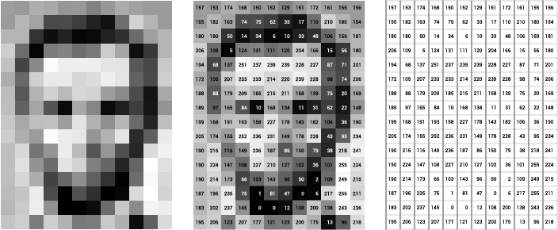

Cours | TD-TP
Introduction au traitement d'images avec OpenCV
Le traitement d'images numériques est un domaine vaste, et les capteurs optiques produisent aujourd'hui des volumes d'images considérables. L'objectif de ce cours est d'apprendre les bases du traitement d'images, puis de les mettre en pratique dans un projet.
Ressources
- Images de test ZIP, 2,5 Mo
- Configuration d'OpenCV PDF
- TD-TP 1 PDF
- TD-TP 2 PDF
- TD-TP 3 PDF
- TD-TP 4 PDF
Étape 0
Bases d'OpenCV
Une image est stockée dans un objet cv::Mat : une matrice de pixels. Son type combine la
profondeur (nombre de bits et signe de chaque valeur) et le nombre de canaux (1 pour une image en niveaux
de gris, 3 pour une image couleur). Par exemple, CV_8UC3 désigne 3 canaux d'entiers non
signés sur 8 bits, soit des valeurs de 0 à 255.
Valeurs entières des types cv::Mat disponibles :
| Profondeur | C1 | C2 | C3 | C4 |
|---|---|---|---|---|
| CV_8U | 0 | 8 | 16 | 24 |
| CV_8S | 1 | 9 | 17 | 25 |
| CV_16U | 2 | 10 | 18 | 26 |
| CV_16S | 3 | 11 | 19 | 27 |
| CV_32S | 4 | 12 | 20 | 28 |
| CV_32F | 5 | 13 | 21 | 29 |
| CV_64F | 6 | 14 | 22 | 30 |
La valeur se calcule ainsi : type = profondeur + 8 × (canaux − 1). C'est l'entier renvoyé
par img.type().
Étape 1
Lecture et affichage d'une image
cv::imread charge une image depuis un fichier. Si le chemin est faux, la fonction ne lève pas
d'erreur : elle renvoie une matrice vide. Il faut donc toujours tester empty()
avant d'utiliser l'image.
#include <opencv2/opencv.hpp>
#include <iostream>
using namespace cv;
int main() {
Mat img = imread("Test_Images/lincoln.png", IMREAD_GRAYSCALE);
if (img.empty()) {
std::cerr << "Impossible de lire l'image" << std::endl;
return 1;
}
std::cout << "Taille : " << img.rows << " lignes x " << img.cols << " colonnes" << std::endl;
std::cout << "Canaux : " << img.channels() << ", type : " << img.type() << std::endl;
imshow("Image", img);
waitKey(0); // attend l'appui sur une touche
imwrite("copie.png", img); // le format est déduit de l'extension
return 0;
}Le second argument de imread fixe la façon dont l'image est chargée :
| Option | Résultat |
|---|---|
| IMREAD_COLOR | Couleur sur 3 canaux, dans l'ordre BGR (valeur par défaut) |
| IMREAD_GRAYSCALE | Niveaux de gris sur 1 canal (CV_8UC1) |
| IMREAD_UNCHANGED | Image telle quelle, canal alpha compris |
Pour compiler sous Linux ou macOS :
g++ main.cpp -o main $(pkg-config --cflags --libs opencv4)
./mainExercice
Chargez veggies.png en couleur, affichez sa taille et son nombre de canaux, puis
enregistrez sa version en niveaux de gris avec cvtColor.
Étape 2
Accès aux pixels avec des coordonnées

L'origine se trouve en haut à gauche. Un pixel est repéré par sa ligne i
(de 0 à rows − 1, vers le bas) et sa colonne j (de 0 à cols − 1,
vers la droite).
Piège classique : img.at<uchar>(i, j) prend (ligne, colonne),
alors que Point(x, y) prend (colonne, ligne). Autrement dit
img.at<uchar>(i, j) == img.at<uchar>(Point(j, i)).
Image en niveaux de gris (CV_8UC1)
uchar v = img.at<uchar>(10, 20); // ligne 10, colonne 20
img.at<uchar>(10, 20) = 255; // le pixel devient blanc
std::cout << (int) v << std::endl; // cast en int, sinon uchar s'affiche comme un caractèreImage couleur (CV_8UC3)
Vec3b p = img.at<Vec3b>(i, j);
uchar blue = p[0]; // OpenCV range les canaux en BGR
uchar green = p[1];
uchar red = p[2];
img.at<Vec3b>(i, j) = Vec3b(0, 0, 255); // pixel rougeParcourir toute l'image
On parcourt les lignes, puis les colonnes. Exemple : le négatif d'une image.
Mat negatif = img.clone();
for (int i = 0; i < img.rows; i++) {
for (int j = 0; j < img.cols; j++) {
negatif.at<uchar>(i, j) = 255 - img.at<uchar>(i, j);
}
}Pour des images volumineuses, récupérer un pointeur sur chaque ligne évite de recalculer l'adresse à chaque pixel :
for (int i = 0; i < img.rows; i++) {
uchar* ligne = img.ptr<uchar>(i);
for (int j = 0; j < img.cols; j++) {
ligne[j] = 255 - ligne[j];
}
}Exercice
Écrivez une fonction qui calcule l'histogramme d'une image en niveaux de gris (tableau de 256 cases), puis une fonction qui dessine un carré blanc de 20 × 20 pixels centré dans l'image.
Étape 3
Binarisation
Binariser une image, c'est séparer les pixels en deux classes (objet et fond) selon un seuil T. Chaque pixel devient noir ou blanc :
g(i, j) = 255 si f(i, j) > T, sinon 0
Seuillage manuel
Mat binariser(const Mat& img, uchar seuil) {
Mat out(img.rows, img.cols, CV_8UC1);
for (int i = 0; i < img.rows; i++) {
for (int j = 0; j < img.cols; j++) {
out.at<uchar>(i, j) = img.at<uchar>(i, j) > seuil ? 255 : 0;
}
}
return out;
}Avec OpenCV
Mat bin;
threshold(img, bin, 128, 255, THRESH_BINARY);
// Otsu : le seuil est calculé automatiquement à partir de l'histogramme
double t = threshold(img, bin, 0, 255, THRESH_BINARY | THRESH_OTSU);
std::cout << "Seuil d'Otsu : " << t << std::endl;
// Seuil adaptatif : un seuil local par voisinage de 11 x 11 pixels
adaptiveThreshold(img, bin, 255, ADAPTIVE_THRESH_GAUSSIAN_C, THRESH_BINARY, 11, 2);Un seuil global échoue dès que l'éclairage n'est pas uniforme, ce qui est fréquent sur les photos de documents. Le seuil adaptatif compare chaque pixel à la moyenne pondérée de son voisinage, moins une constante (ici 2). La taille du voisinage doit être impaire.
Exercice
Binarisez doc1.jpg à doc4.jpg avec les trois méthodes et comparez les
résultats. Puis implémentez vous-même la méthode d'Otsu à partir de l'histogramme de l'étape 2.
Étape 4
Filtres et convolution
Un filtre linéaire remplace chaque pixel par une combinaison pondérée de ses voisins. Les poids forment un noyau h, une petite matrice de taille impaire (3 × 3, 5 × 5…). Cette opération s'appelle la convolution :
g(i, j) = Σu Σv h(u, v) · f(i − u, j − v)
Noyaux classiques
| 1 | 1 | 1 |
| 1 | 1 | 1 |
| 1 | 1 | 1 |
| 1 | 2 | 1 |
| 2 | 4 | 2 |
| 1 | 2 | 1 |
| −1 | 0 | 1 |
| −2 | 0 | 2 |
| −1 | 0 | 1 |
| 0 | 1 | 0 |
| 1 | −4 | 1 |
| 0 | 1 | 0 |
Convolution manuelle
Le résultat peut sortir de l'intervalle [0, 255] (valeurs négatives avec Sobel, par exemple).
On calcule donc en float (CV_32F). Les bords, où le noyau dépasse de
l'image, sont laissés à 0 dans cette version.
Mat convolution(const Mat& img, const Mat& noyau) {
// img : CV_8UC1, noyau : CV_32F de taille impaire
int ri = noyau.rows / 2, rj = noyau.cols / 2;
Mat out = Mat::zeros(img.rows, img.cols, CV_32F);
for (int i = ri; i < img.rows - ri; i++) {
for (int j = rj; j < img.cols - rj; j++) {
float somme = 0;
for (int u = -ri; u <= ri; u++) {
for (int v = -rj; v <= rj; v++) {
somme += noyau.at<float>(ri + u, rj + v) * img.at<uchar>(i - u, j - v);
}
}
out.at<float>(i, j) = somme;
}
}
return out;
}
Mat moyenne = Mat::ones(3, 3, CV_32F) / 9.0f;
Mat sobelX = (Mat_<float>(3, 3) << -1, 0, 1,
-2, 0, 2,
-1, 0, 1);
Mat lisse, contours;
convolution(img, moyenne).convertTo(lisse, CV_8U); // arrondi et saturation dans [0, 255]
convertScaleAbs(convolution(img, sobelX), contours); // valeur absolue puis conversion en 8 bitsAvec OpenCV
Mat out;
filter2D(img, out, -1, noyau); // -1 : même profondeur que l'image source
blur(img, out, Size(3, 3)); // moyenne
GaussianBlur(img, out, Size(5, 5), 1.5); // gaussien, écart-type 1.5
medianBlur(img, out, 3); // médian (filtre non linéaire)
Mat gx, gy;
Sobel(img, gx, CV_16S, 1, 0, 3); // dérivée selon x
Sobel(img, gy, CV_16S, 0, 1, 3); // dérivée selon y
À savoir : filter2D calcule en réalité une corrélation (le noyau
n'est pas retourné). Le résultat est identique pour les noyaux symétriques (moyenne, gaussien,
Laplacien). Pour Sobel, le signe est inversé : retournez le noyau avec flip(noyau, noyau, -1)
pour obtenir une vraie convolution.
Exercice
Sur fountainSaltPepper.png, comparez le filtre moyenne et le filtre médian : lequel supprime
le bruit « poivre et sel » sans flouter les contours ? Puis calculez la norme du gradient
√(gx² + gy²) avec vos deux noyaux de Sobel et binarisez-la pour obtenir une carte de contours.
Astuces
Créer une matrice initialisée à zéro de type T. T peut être le nom du type
(CV_8UC3) ou sa valeur entière (16) :
Mat m = Mat::zeros(nb_lignes, nb_colonnes, T);Accéder à un pixel couleur d'une image en CV_32FC3 avec le type Vec3f :
Vec3f p = img.at<Vec3f>(i, j);
float blue = p[0];
float green = p[1];
float red = p[2];Convertir une image couleur en niveaux de gris (attention à l'ordre BGR) :
cvtColor(img_source, img_destination, COLOR_BGR2GRAY);Convertir une image 8 bits en float, avec ou sans normalisation dans [0, 1] :
img_source.convertTo(img_destination, CV_32F);
img_source.convertTo(img_destination, CV_32F, 1.0 / 255);